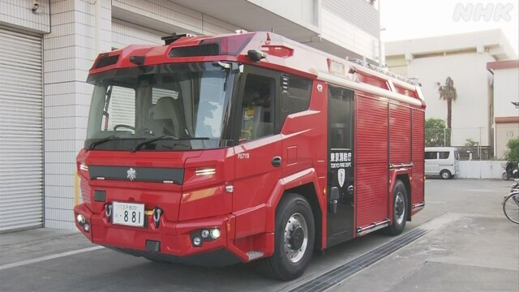

最新ニュース
1️⃣ トランプ大統領 14日に中国の習近平国家主席と話をする
トランプ大統領は、日本の時間の13日の朝、アメリカを出発して中国の北京へ向かいました。14日、習近平国家主席と話をする予定です。
アメリカは、産業に必要なレアアースを中国から輸入しています。トランプ大統領は、この貿易などについて話すようです。
イランの問題のことも話し合うと考えられています。2人が話をして、アメリカとイランとの問題がいい方に進むか注目されています。
2️⃣ 3月にエアコンがたくさん売れた
今年3月、家で使うエアコンが日本で116万台以上売れました。3月では、いちばん多くなりました。
よく売れたのは理由があるようです。
エアコンは、来年4月から電気をあまり使わないものを売るため値段が高くなりそうです。
そして、市や町などの中には、今エアコンを買う人にお金を出しているところがあります。このため、今買う人が増えています。
メーカーなどの団体の人は「エアコンが安い間に買おうという人は、しばらく多そうです」と話しています。
3️⃣ フィギュアスケートの坂本花織選手「全部やったという気持ち」
フィギュアスケートの坂本花織選手は、選手をやめることについて、13日に話しました。
坂本選手は、オリンピックの2つの大会でメダルをとりました。
26歳の坂本選手は「北京の大会が終わった後、この4年が最後だと決めていました。全部やったという気持ちですが、ほかの選手のジャンプの練習を見たりすると、少し寂しい気持ちもあります」と話しました。
そして将来は「スケートの技術だけではなくて、いろいろなことを若い人に教えたい」と話しました。
坂本選手は最後に、大学生の時に知り合った男性と結婚したことを発表しました。
4️⃣ 富士山が噴火したときでも動く消防車

東京の八王子市に、電気で動く新しい消防車が来ました。
この車は、富士山が噴火したときのために用意しました。
富士山が噴火したら、たくさんの灰が遠くまで飛びます。八王子市では灰が30cmぐらい積もると考えられています。ガソリンなどで動く車は、エンジンの中に灰が入って動かなくなる心配があります。
新しい消防車は、エンジンを使わないため、灰が積もった道でも走ることができます。電気で動くポンプで、6時間ぐらい水をかけることができます。
消防の人は「噴火のときに困らないように今から準備をしておきます」と話しています。
- 〜予定だ
- 〜予定
- 〜から
- 〜ている / 〜でいる
- 〜について
- 〜ようだ / 〜みたいだ
- 〜など
- 〜こと
- 〜方
- 〜以上
- 〜がある / 〜がいる
- 〜そうだ
- 〜ため
- 〜中
- 〜ところ
- 〜や〜など
- 〜という
- 〜後 / 〜あと
- 〜なくて
- 〜だけ
- 〜ため(に)
- 〜まで
- 〜くらい / 〜ぐらい
- 〜ことができる
- 〜ても / 〜でも
- 〜ておく
- 〜ように
vebaev.github.io
Generated: 2026-05-13 13:12:11 UTC